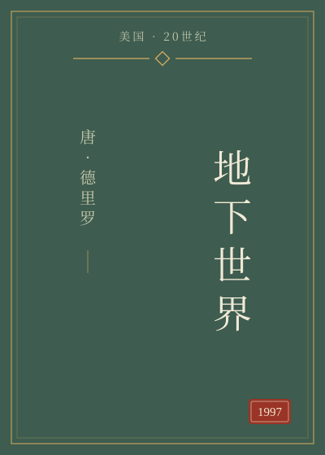
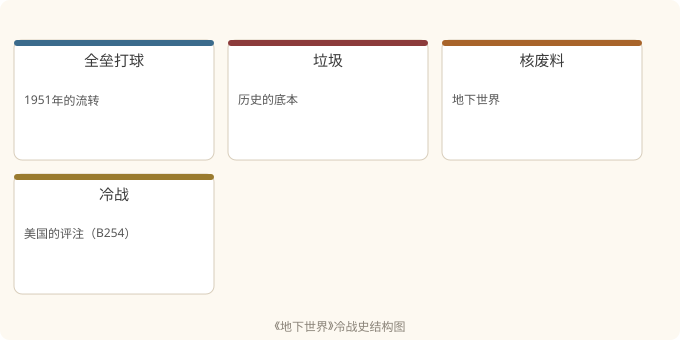

地下世界
一、基本信息
| 作者 | 唐·德里罗 |
|---|---|
| 成书/出版 | 1997年出版（Britannica：Underworld 1997） Don DeLillo — Encyclopaedia Britannica（百科全书） |
| 国别/地区 | 美国 |
| 时代 | 现当代 · 20世纪 |
| 体裁 | 长篇小说 |
| 语言 | 英语 |

《地下世界》冷战史结构图（主题·结构图）
二、创作背景
Britannica（B254）：'DeLillo received significant acclaim for the sprawling novel Underworld (1997), which provides a commentary on American history'（为其最受赞誉之作——对美国历史的评注）。
背景：冷战年代的废品与核废料——'垃圾'成为历史的底本（通说待核）。
三、内容脉络
尼克·谢伊的视角横跨1951—1990年代：库比·马克's 一记全垒打球的流转（通说待核）。
垃圾处理修女埃德加？——不： garbage 修女线（通说待核）。
四、主要人物表
| 人物 | 身份 | 说明 |
|---|---|---|
| 尼克·谢伊 | 废品业主管 | 叙述者（通说待核） |
| 库比·马克 | 棒球手 | '胜利球'（通说待核） |
五、主题与艺术特点
- 冷战美国的地下史（B254：commentary on American history）。
- 废弃物的形而上学（通说）。
- 媒体时代的记忆（通说）。
六、影响与评论
- Britannica：德里罗最受赞誉之作（B254）。
Don DeLillo — Encyclopaedia Britannica（百科全书） - Britannica：2013年国会图书馆美国小说奖（作者级，B254）。
Don DeLillo — Encyclopaedia Britannica（百科全书）
七、阅读建议
难点
- 800页大书与倒叙结构（通说待核）。
- 冷战核恐慌背景。
- 《地下世界》（译林出版社？中译本信息待核）。
先《白噪音》→ 本作。
八、待核实
- 主角名与结构核对。
- 中译本信息待核。
- 1997年出版（Scribner说）核对。
本页主要来源
唐·德里罗的其他收录作品：白噪音